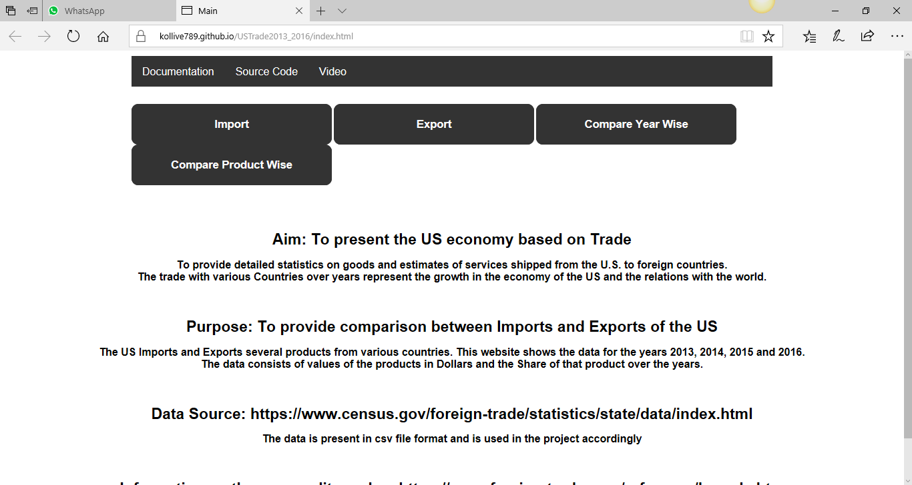

We initiated our design with the Choropleth US map in the first page by provide a on click function on the states coloured based on Export/Import dollar value of a year.
Our attempt was to get trading details (Export and Import) of each state on click of the states by showing many drop down lists in the later page which affected the graph below to show the trend in the data of that state.
In the process we encountered lot of hindrance (may be because of our limited skill in D3) and hence had to change our design.
Design Inputs:
The map under import and export which shows the values for each state for the year 2016 is coded in D3 and the rest data is visualized using highchart libraries.
Our visualization idea is to take the user to one single page from where he/she will be able to drilldown to lowest entity in any trade. In the landing page links to Import and Export are provided for specific visualization.

Like on click on “Compare Share Wise” button the user will be taken to new page which will display Choropleth US map with Year wise (2013 to 2016) import share in the tooltip of mouseover on each states.
The color differentiation in each state is based on the trading $ value. Similar visualization is done for Export as well. These are the initial version of the maps but then we decided to maintain consistency and used the same colours which were used for the import and export maps


Comparative year wise trade (both export and import) can be seen on click of “Trading Countries” button. On click of bar for each year state wise trade ($ value) contribution for that year can be seen in bar graph.


On click of each bar for a state the bar graph of the corresponding trading countries can be seen. This interactivity is consistent across every year for both Import and Export and with lowest drilldown to the country level. Product wise export and import product spread for a particular state can be seen on click of “Compare Product Wise” button. There is a dropdown list to select the state.
All the colours used are colour blind safe and the tooltip helps the users to understand the value of the particular section of the visualization.
Also the user can zoon in to see the share maps in the import and export to see the exact values of the year wise share in th pie chart